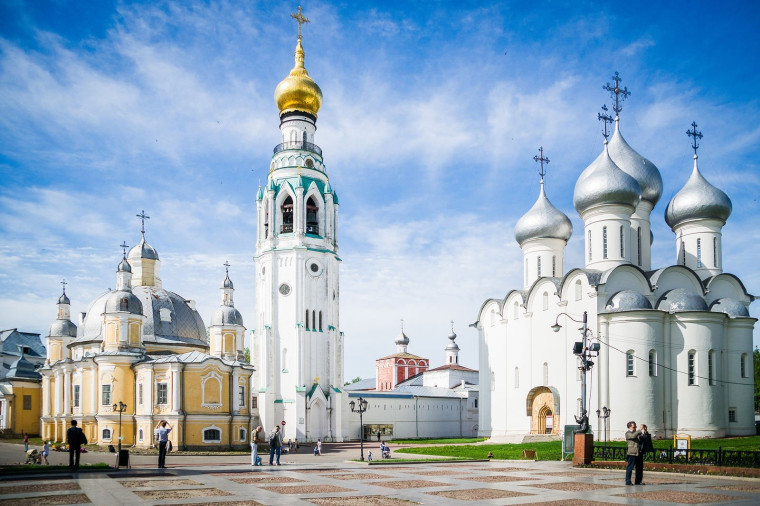
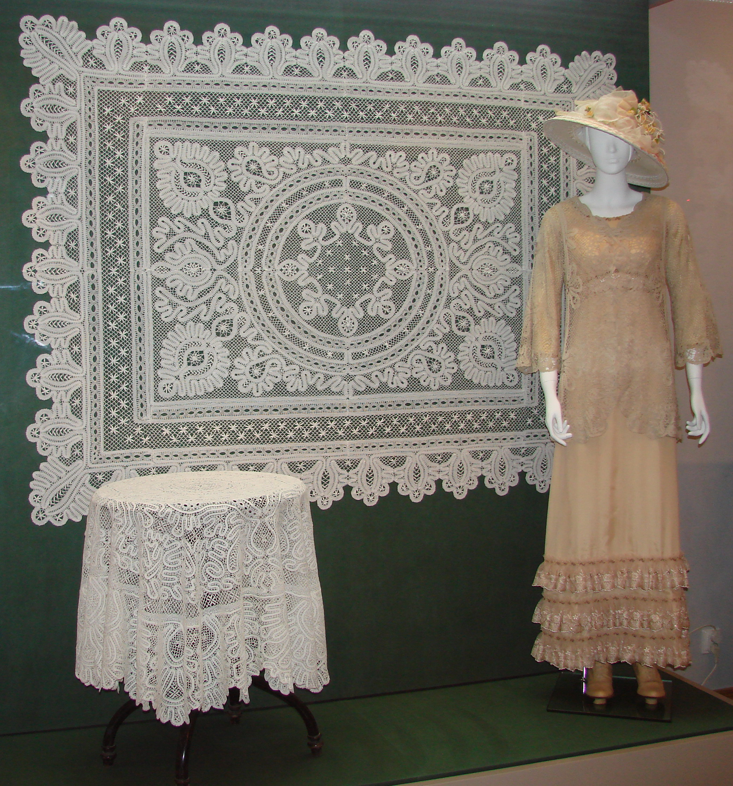
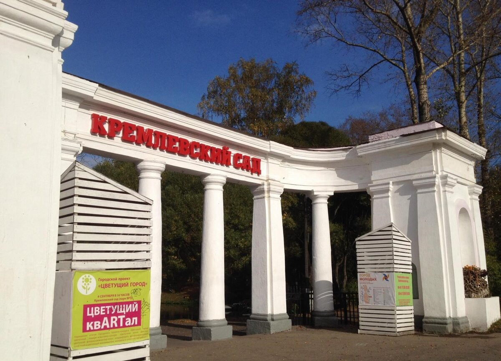
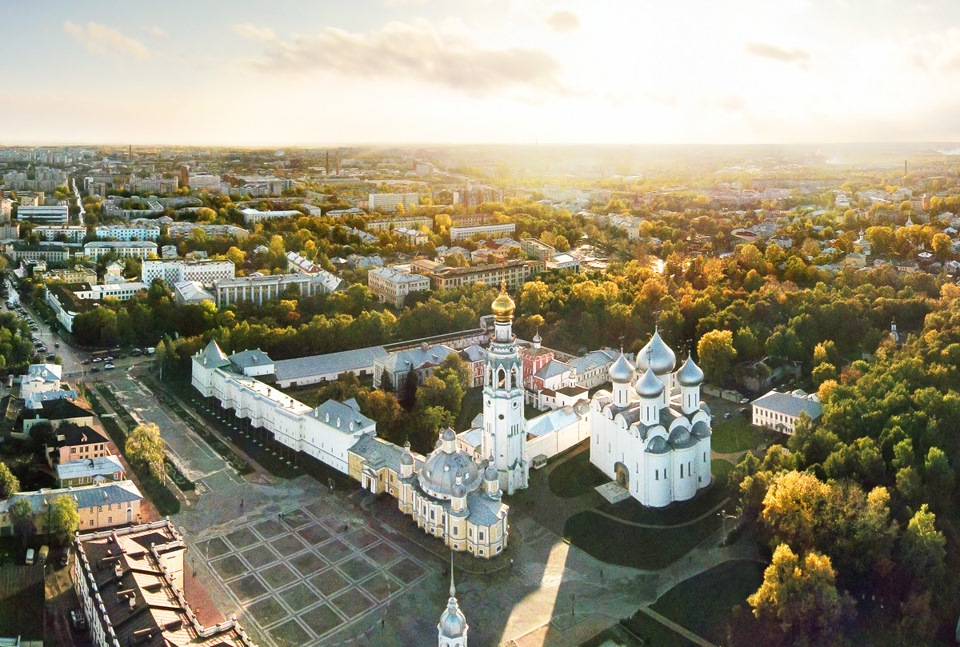

Моя малая родина
Вологда — город, где я родился и живу

О городе
Вологда — один из старейших городов Русского Севера, основанный в 1147 году. Город расположен в 450 километрах от Москвы и является крупным культурным, научным и промышленным центром Вологодской области.

Достопримечательности
Вологда знаменита своим архитектурным наследием. Вологодский кремль, Софийский собор, Спасо-Прилуцкий монастырь — лишь малая часть исторических памятников, которые можно увидеть в городе. Особую известность городу приносит вологодское кружево.

Мои любимые места
Больше всего в родном городе я люблю гулять по набережной реки Вологды, особенно в летнее время. Также часто бываю в Кремлёвском саду и на площади Революции.

Интересные факты
- Вологда старше Москвы на несколько лет
- Здесь находится один из крупнейших в России театров
- Вологодское масло и кружево известны по всему миру
- Трасса М8 "Холмогоры" проходит через город